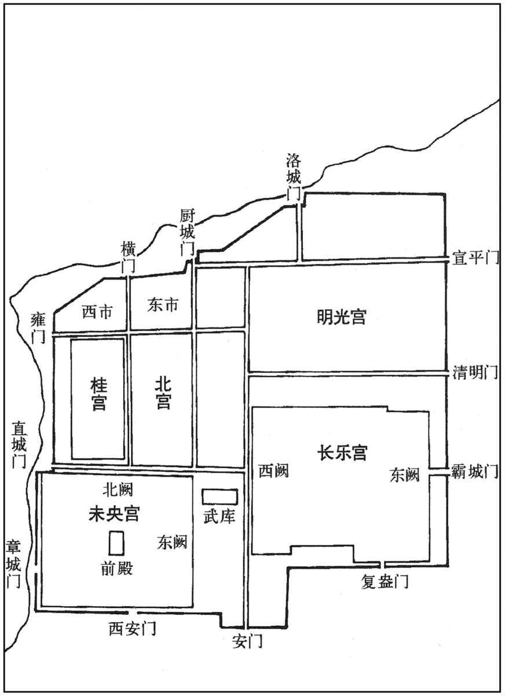

公元前190年资治通鉴：本年记事、原文与白话对照
按原书编年位置阅读；追叙和史论不等于本年发生的事件。白话采用所据译本，缺译不以生成译文补齐。
卷12 · 本年记事
公元前190年 · 汉孝惠皇帝五年
五年〔（辛亥、前一九○）〕
本年事件索引（现代整理）

本年形势与背景参考图
原文 · 胡三省注本
冬，雷；〔洪范论曰：阳用事百八十三日而终，阴用事百八十三日而终。雷出地百八十三日而入地，入地百八十三日而复出地，是其常经也；冬雷为失常。〕桃李华，枣实。
白话 · 所据译本
冬季，雷声响起，桃树、李树开花，枣树结果。
原文 · 胡三省注本
春，正月，复发长安六百里内男女十四万五千人城长安，三十日罢。
白话 · 所据译本
春季，正月，再次征发长安周围六百里内男女民工十四万五千人修筑长安城，三十天后结束。
原文 · 胡三省注本
夏，大旱，江河水少，溪谷水绝。
白话 · 所据译本
夏季，大旱，长江、黄河水少，溪谷干涸。
原文 · 胡三省注本
秋，八月，平〔【章：甲十五行本“平”上有“己丑”二字，乙十一本同；孔本同。】〕阳懿侯曹参薨。〔谥法：温柔贤善曰懿。〕
白话 · 所据译本
秋季八月，平阳侯曹参去世。